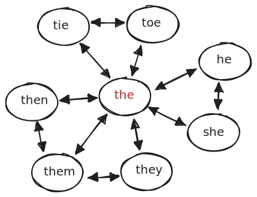

Software Generated Word Ladder Puzzles - Web App
Table of Contents

Figure 1: Demo
Overview
This web app generates word ladders and asks the user to solve them within a maximum number of steps. The puzzles are generated by the server in response to a request and stored in session data. At a high level, the word ladder puzzles are generated by
- making a random word ladder using the 5000 most common English words
- finding the shortest path between those first and last words in the ladder using only the 5000 most common English words
The length of this shortest path determines the maximum number of steps for the user to solve the puzzle.
Additional Features
- Signup, Login/Logout, Edit/Delete Account
- History of a user's previous solutions
- Leaderboard
Technologies Used
The backend for the Web App is written in Ruby and uses Sinatra, ERB, and a PostgreSQL database.
Gameplay
User input steps are considered valid if
- there is one letter of difference between the step and the previous step
- and the word can be found among the 200,000 most commonly used English words.
Examples:
buy => buys: valid
buy => bus: valid
buy => busy: valid
busy => buoy: valid
has => as: valid
use => bus: invalid
abuse => bus: invalid
Generating Puzzles
I parsed the data from a csv file of 5,000 most commonly used English words into a graphical representation of the data, which I then serialized to a YAML file so that my ruby code can more efficiently recreate it. Each vertex in the graph represents a word. The neighbors of every vertex in the graph are the vertices whose word is "adjacent" to the word stored by the vertex.

Figure 2: "The" and its neighbors.
Among my 5k words, it is possible find two words between which there simply is no path. So in order to not waste time solving for the shortest path between two words for which no path exists, my program first creates a ladder randomly.
Then, my program takes the first and last words from the random ladder, ignores the rest, and attempts to find the shortest path between them using a breadth first search of the graph. If it takes too long, (if the queue is getting too long) it will inform the calling method which will try again with an entirely new random word ladder.
class Vertex #... def traverse(end_point) return [self.data, end_point.data] if self.neighbors.include? end_point queue = [[self]] while (queue.length != 0) if queue.length > 1_000_000 return :timeout end path = queue.shift node = path[-1] return path.map { |n| n.data } if node == end_point node.neighbors.each do |neighbor| next if path.include?(neighbor) new_path = path.dup new_path << neighbor queue.push(new_path) end end end #... end
Open Issues
I decided to use 5,000 words after some amount of trial and error. With larger word sets, it takes longer and longer to deserialize the graph. I would like it be able to make use of a broader vocabulary, and I have some ideas for how to make that happen. Although there are probably a variety of ways I could improve the speed of generation of puzzles (multithreading, for instance), I think the best solution is to make it a non-issue by caching previously generated word ladders and reusing them. The reason I haven't done that already basically comes down to the fact that I wanted to get the app up and running, and caching previously generated word ladders introduces some complexity I didn't want to deal with just yet. But that would be the next step.
Caching previously generated puzzles opens up a number of possibilities such as:
- displaying other user's solutions for the same puzzle
- ranking puzzles based on quality/difficulty
- Algorithmically determining which puzzle to show the user
- Massively broadening the vocabulary of the word set
I have some plans to make the puzzles more conceptually interesting by making them out of conceptually related words rather than just random, but that requires a greater vocabulary first.
Another issue is that the leaderboard is too simplistic. It only measures the number of puzzles a user has solved. There's no extra credit for getting a puzzle in fewer steps, solving a puzzler faster, solving a harder puzzle, etc….